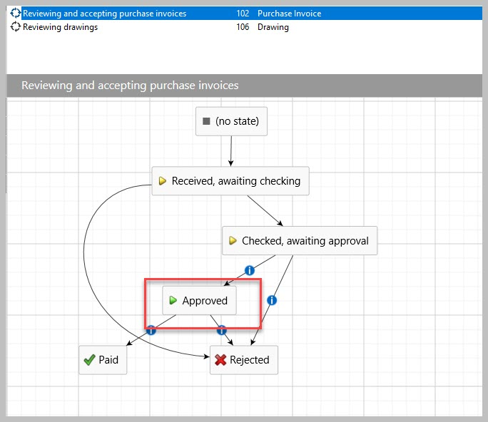
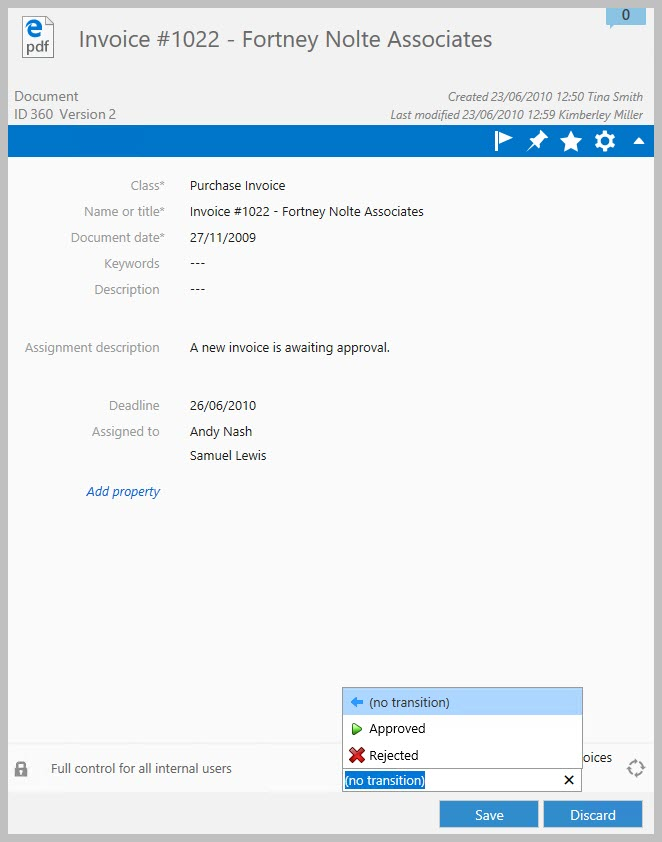
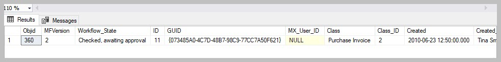
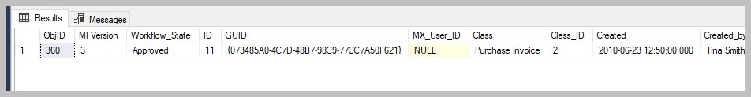
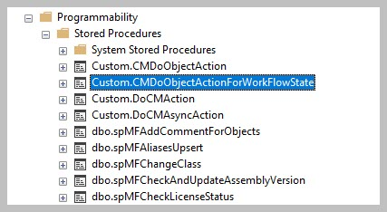
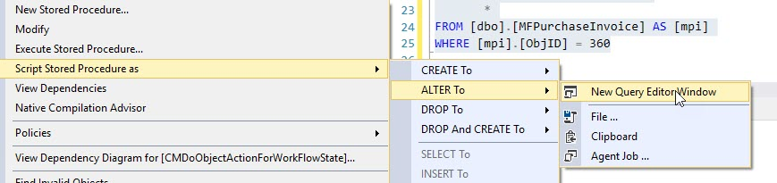
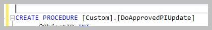
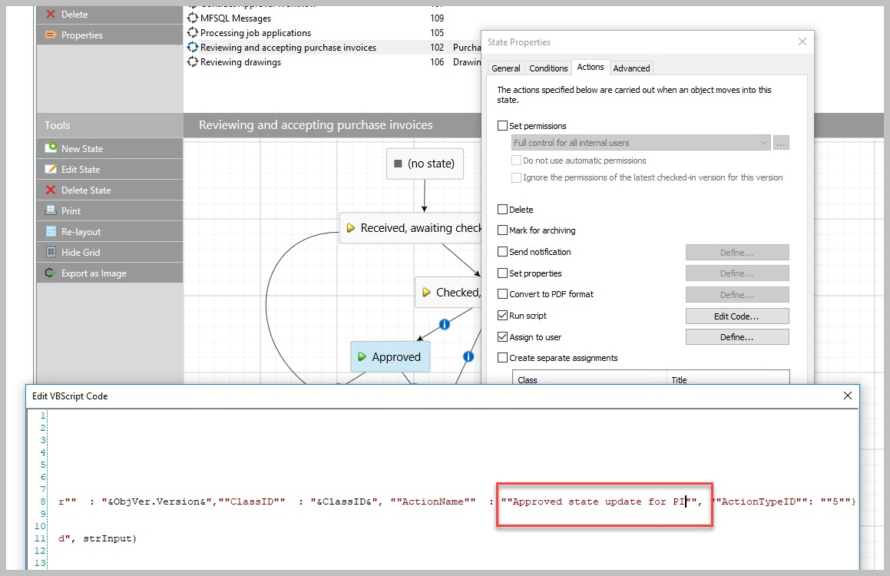

Setting up a workflow state change¶
This use case will illustrate how to setup an action to take place in SQL based on a workflow state change.
When the purchase invoice is approved, SQL must be updated with the latest status of the object. It this use case only the specific object must be updated.
An alternative method would be to update all changes in the class for all objects. This is a different method requiring a slightly different approach.
This operation is part of the Context Menu functionality of the Connector and depends on the installation of the Context Menu in the Vault. Note that this functionality is not available for deployments where the M-Files server and the SQL Server is not in the same domain.
This is method is particularly useful when a workflow event in M-Files must trigger a background operation such as:
updating M-Files records into SQL for reporting or further processing
triggering an operation into or from a third party application
performing a complex operation on the object being changed or any other object that can be derived from the user action.
This use case will illustrate settings up an update to a class table for a specific object when the state is changed.
Different parts of the connector are being used in this use case and familiarity with the following is required:
spMFDropAndUpdateMetadata (to update the configuration changes in M-Files)
spMFCreateTable (to create the class table)
MFPurchaseInvoice (the class table)
MFContextMenu (the rules table for context menu operations)
spMFContextMenuHeadingItem (to add heading)
spMFContextMenuActionItem (to add action)
custom.CMDoObjectActionForWorkflowState (serves as template for setting up procedure)
spMFUpdateTable (to update object into SQL)
VB script of state change actions (template to be used)
Step 1: M-Files vault updates
Determine the class of object that will be used for the workflow state action. In the use case it is Purchase Invoices.

Assign a workflow to the class. Determine the workflow state that will be used to action a SQL procedure.
In our example the workflow for the class is Release and accepting purchase invoices and the state is Approved

When the user update the workflow state to approved, the expectation is the object will be updated SQL to show the latest data of the object.
Step 2:
Update the metadata structure in SQL if any changes where made to the structure.
EXEC [dbo].[spMFDropAndUpdateMetadata]
Step 3:
Create the class table in SQL and update the table from M-Files to SQL
EXEC [dbo].[spMFCreateTable] @ClassName = 'Purchase invoice'
EXEC [dbo].[spMFUpdateTable] @MFTableName = 'MFPurchaseInvoice', -- nvarchar(200)
@UpdateMethod = 1
Step 4:
Create the custom procedure to for the action to be performed. In this case the object should pull and update from M-Files to SQL for the specific object.
It is good practice to first create and debug to code snippet that will perform the action, and then to build it into the framework.
We will use the additional parameters in the spmfupdatetable procedure to achieve the objective. When executed the procedure must update for the specific object.
We will also introduce to use of error trapping and logging for messages and back tracking when setting up the procedure.
First setup a select statement to review the object to be updated
SELECT [mpi].[ObjID],
[mpi].[MFVersion],
[mpi].[Workflow_State],
*
FROM [dbo].[MFPurchaseInvoice] AS [mpi]
WHERE [mpi].[ObjID] = 360
The result - before the update:

Make the change in M-Files. Then run the update statement.
Note the following:
We will be passing in the objid when this snippet is connected to the action. We therefore setup an input parameter for the objid as an integer.
spMFupdatetable allows for a comma delimited string of objid’s to be passed to M-Files. It will only perform the update operation for the list of objid’s. In the example we will pass a single objid to the procedure but it need to be converted to a string.
Using the @Update_IDOut and @ProcessBatch_ID allows for viewing the logging results of the process which is taking place in the background. This is helpful for backtracking and debugging.
DECLARE @Update_IDOut INT, @ProcessBatch_ID INT
DECLARE @Objid INT, @Objids_string NVARCHAR(4000)
SET @objid = 360
SET @objids_string = CAST(@objid AS NVARCHAR(10))
EXEC [dbo].[spMFUpdateTable] @MFTableName = 'MFPurchaseInvoice',
@UpdateMethod = 1,
@ObjIDs = @Objids_string,
@Update_IDOut = @Update_IDOut OUTPUT,
@ProcessBatch_ID = @ProcessBatch_ID OUTPUT
EXEC [dbo].[spMFUpdateHistoryShow] @Update_ID = @Update_IDOut,
@IsSummary = 0,
@UpdateColumn = 3
SELECT * FROM [dbo].[MFProcessBatchDetail] AS [mpbd] WHERE [mpbd].[ProcessBatch_ID] = @ProcessBatch_ID
After the update has been performed and the operation to be actions has been tested the result can be reviews. The expectation is to see an increase in the object version with the new workflow state showing.

Step 5:
The targeted operation can now be built into the framework to allow for the operation to be triggered when the state change takes place.
The installation include a number of sample procedures that can be used as a starting point for this step.
Select the procedure: custom.CMDoObjectActionForWorkflowState from ssms object explorer.

right click on the object and then select the options to create a new query from existing

Rename the new procedure to be created, and save the script for later reuse. Good practice is to:
use the custom schema for all custom procedures and tables.
Start with an action word (do)
Add the subject of the action (ApprovedPI)
Add the action (update)
Don’t forget to also update the value of the parameter @procedurename = ‘Your new procedure name’

We can now start to include the operation developed above into the example script.
The sample procedure include three operations for the object. The following comment lines is shown at the start of each of the operations:
–get object from M-Files
–Perform action on/with object
–process update of object into M-Files
The first operation - get object from M-Files is similar to the result in step 4. In this case the only operation to be performed is to get the new object. You can therefore delete the next two operations as they are not required.
The next update is to review and change the user message. This can be achieved by changing the set value of the @Output parameter in the section – set custom message to user.
-- set custom message to user
SET @OutPut = @OutPut + ' Object updated ' + CAST(@ObjectID AS VARCHAR(50))
Execute the procedure to save it in the database.
Note the following special features and operations that is included in the example and is now part of your procedure:
The input parameters for the procedure (@objectID, @ObjectType, @ObjectVer, @ClassID) are all passed into this procedure by M-Files when the action is called
The input parameter @ID reference the id of the action item in the MFContextMenu. (more about this later)
The output parameter @output is the message that will be included in the MFUserMessage table by default. (other alternatives are also available)
The procedure will log operations to the MFprocessBatch and MFProcessBatchDetail tables. This can be modified.
The WAITFOR DELAY statement must not be removed. This allows for the object to be checked in before the update to SQL takes place. Note that the timeframe (in seconds) can be modified to suite the specific requirements.
The spMFResultMessageForUI controls the nature and content of the user message. There are various options for this. The default is a update message in the MFUserMessage table which is visible in M-Files.
Step 6:
Next step is to setup context menu to enable to procedure to be called from M-Files. It has two parts:
Add entries to MFContextMenu
Add VB script to workflow state action.
We recommend to use the example script 07.101 Updating the Context Menu. This script is included in the installation and can be found in installation folder: C:\Program Files (x86)\Laminin Solutions\MFSQL Connector Release 4\[Your database]\Example Scripts
Using this script you will add a context menu action item with the following parameters:
EXEC [dbo].[spMFContextMenuActionItem]
@ActionName = 'Approved state update for PI' ,
@ProcedureName = 'Custom.DoApprovedPIUpdate',
@Description = 'Procedure for state action to update object',
@RelatedMenu = 'Asynchronous Actions',
@IsRemove = 0,
@IsObjectContext = 1,
@IsWeblink = 0,
@IsAsynchronous = 1,
@IsStateAction = 1,
@PriorAction = null,
@UserGroup = 'All Internal users',
@Debug = 0
The result is in the MFContextMenu
The final step is to add the VB script into the workflow state. This is done in M-Files Admin
Use the following VB script (also available in the Using the Context Menu
Option Explicit
Dim ClassID
ClassID= Vault.ObjectPropertyoperations.GetProperty(ObjVer, 100).value.GetLookupID
Dim strInput
strInput = "{""ObjectID"" : "&ObjVer.ID &", ""ObjectType"" : "&ObjVer.Type &", ""Objectver"" : "&ObjVer.Version&",""ClassID"" : "&ClassID&", ""ActionName"" : ""StateAction2"", ""ActionTypeID"": ""5""}"
Dim strOutput
strOutput = Vault.ExtensionMethodOperations.ExecuteVaultExtensionMethod("PerformActionMethod", strInput)
'Err.Raise MfScriptCancel, strOutput
Copy and past the script to the workflow state (Approved) / option Actions/ Run Script. The only change to make is to set the procedure that will be updated. Navigate the right and change the default to the action name in MFContextMenu

Step 7:
The next step is to test the entire procedure that would be called by the action script.
Change the workflow to the desired state in M-Files. Note that the update will take approx. 1 minute (the time set in the WAITFOR DELAY). then check SQL to see if the update took place.
Step 8:
Debugging tips:
Check the MFContextMenu to see if the process was triggered by M-Files.
If IsProcessRunning = 1 and Last_Executed_Date = when to action was performed then the trigger is working fine, but the procedure failed.
Else the trigger has failed.
SELECT [mcm].[ID],
[mcm].[ActionName],
[mcm].[IsProcessRunning],
[mcm].[Last_Executed_By],
[mcm].[Last_Executed_Date],
[mcm].[ActionUser_ID]
FROM [dbo].[MFContextMenu] AS [mcm]
Possible causes for trigger that is failing:
Context menu is not correctly installed, or cannot connect